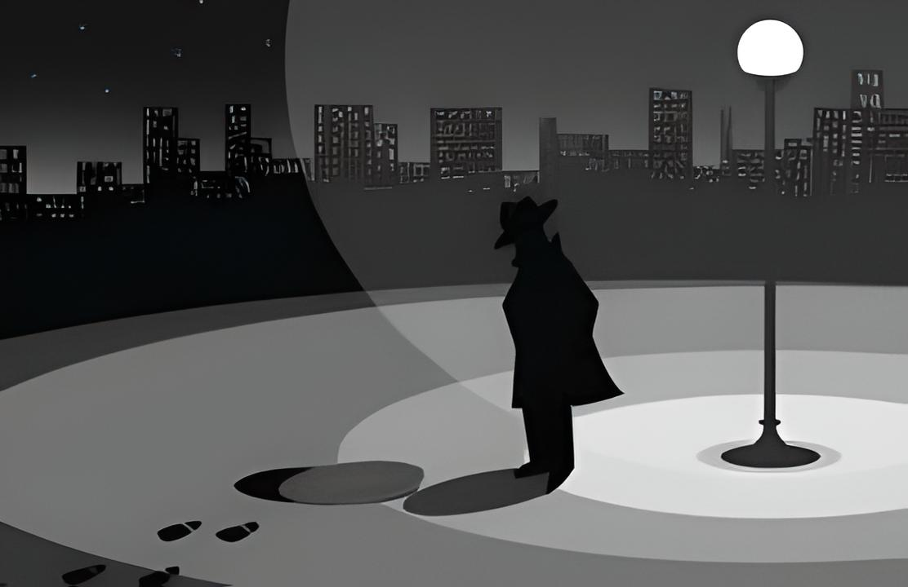

What is Crime Fiction?
Crime fiction is a literary genre centered on criminal acts, investigations, motives, and the search for truth. At its core, crime fiction places a mystery or other forms of wrongdoings at the heart of the narrative. Readers follow detectives, law enforcement, private investigators, journalists, or ordinary individuals who are drawn into the case.
Most contemporary crime fiction stories nowadays are often associated with murders and high-stakes investigations, but these stories are not limited and can explore a wide spectrum of crimes, from theft and fraud to conspiracies and forms of psychological manipulation. The tension usually comes from uncovering hidden truths, navigating clues and red herrings, and understanding what drives people to break the law.
Crime fiction is also deeply psychological, as they often go into the depths of examining human nature, morality, justice, and the darker aspects of society. Whether gritty and realistic or light and puzzle-driven, the genre continues to evolve while remaining one of the most widely read categories in literature.
History of Crime Fiction
The history of crime fiction spans nearly two centuries, evolving from early detective tales into a broad and diverse genre. Even without visual timelines, the development of crime fiction can be understood through its major eras and influential works.
The Origins: Early to Mid-1800s
Many scholars credit Edgar Allan Poe as the father of detective fiction. His 1841 story The Murders in the Rue Morgue introduced C. Auguste Dupin, the first fictional detective to use logical reasoning and analysis, establishing the template for future sleuths. These early tales set the foundation for mystery-driven narratives where intellect solves the crime.
The Golden Age (1920s-1930s)
The Golden Age of crime fiction produced intricate “whodunit” mysteries, often featuring upper-class settings, clever puzzles, and a focus on fair-play clues. Authors like Agatha Christie, Dorothy L. Sayers, and G.K. Chesterton dominated this era. Christie's Poirot and Miss Marple became iconic, and the rules of detective fiction were formalized to ensure readers had a fair chance to solve the mystery.
Hard-Boiled and Noir (1930s-1950s)
In the United States, crime fiction took a darker turn. Crime became grittier, morally ambiguous, and grounded in urban life. Writers such as Dashiell Hammett and Raymond Chandler created tough private investigators who navigated corrupt systems, dangerous criminals, and their own personal flaws. This era prioritized atmosphere, cynicism, and realism over puzzle-solving.
Police Procedurals and the Modern Era (1950s-Present)
The rise of police-centered stories brought realism and detail into the genre. Authors like Ed McBain helped popularize the police procedural, which followed law enforcement teams step-by-step through an investigation. Modern crime fiction has continued to evolve, incorporating forensic science, psychological profiling, global settings, and hybrid styles that blend crime with thriller, horror, or true-crime influences.
Contemporary Crime Fiction
Today, crime fiction includes a wide range of voices and perspectives, including international crime fiction, feminist crime novels, and works focused on social issues. Scandinavian “Nordic Noir” has grown especially popular, known for bleak atmospheres and morally complex characters.
Core Elements of Crime Fiction
Although the genre has many variations, most crime fiction includes these major elements:
- The Crime: The central act that drives the plot, often a murder, theft, or conspiracy.
- The Investigator: A detective, amateur sleuth, journalist, or ordinary individual who seeks the truth.
- Clues and Red Herrings: Information that helps or misleads both the reader and the investigator.
- Suspects and Motives: Characters who may have reasons to commit the crime.
- The Reveal: The final explanation of what happened, how, and why.
Subgenres of Crime Fiction
Crime fiction is a broad genre, encompassing various subgenres including:
- Detective Fiction
- Hard-Boiled Fiction
- Legal Thrillers
- Cozy Mysteries
- Noir Fiction
- Police Procedurals
- Psychological Thrillers
- True Crime-Inspired Fiction
Common Detective Archetypes
Crime fiction often revolves around certain classic investigator types:
- The Brilliant but Eccentric Detective (e.g., Sherlock Holmes)
- The Hard-Boiled Private Eye (e.g., Philip Marlowe)
- The Amateur Sleuth (e.g., Miss Marple)
- The Police Detective (e.g., modern procedurals)
- The Antihero Investigator (morally ambiguous characters)
The Cultural Impact of Crime Fiction
Crime fiction has shaped modern storytelling in books, television, film, podcasts, and even video games. Its influence can be seen in true-crime documentaries, police dramas, detective shows, and mystery-driven interactive media. The genre also reflects social anxieties, changing legal systems, and evolving ideas of justice.
Crime fiction remains one of the most popular genres worldwide because it combines suspense, problem-solving, emotional tension, and human psychology in a way that appeals to a wide audience.
Recommended Crime Fiction Books
Here are a few must-read crime fiction books:
- The Murder of Roger Ackroyd by Agatha Christie
- The Hound of the Baskervilles by Arthur Conan Doyle
- The Big Sleep by Raymond Chandler
- L.A. Confidential by James Ellroy
- One of Us Is Lying by Karen M. McManus